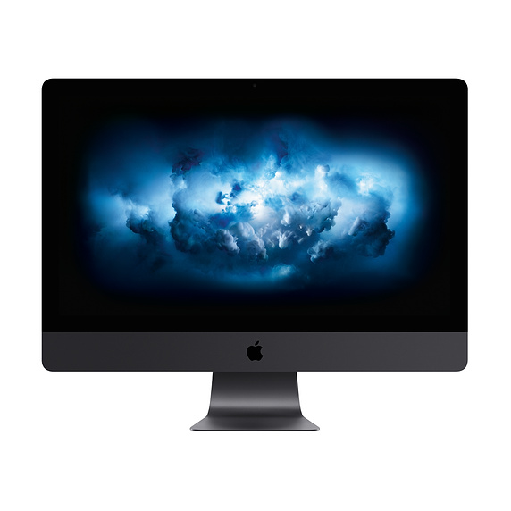

Hi!This page will be used as a way for me to connect with everyone who is interested in or enjoys my content, while there will eventually be discussion boards and survey questions through CSS, for the time being you can ask me questions or give me feedback through my Email!
